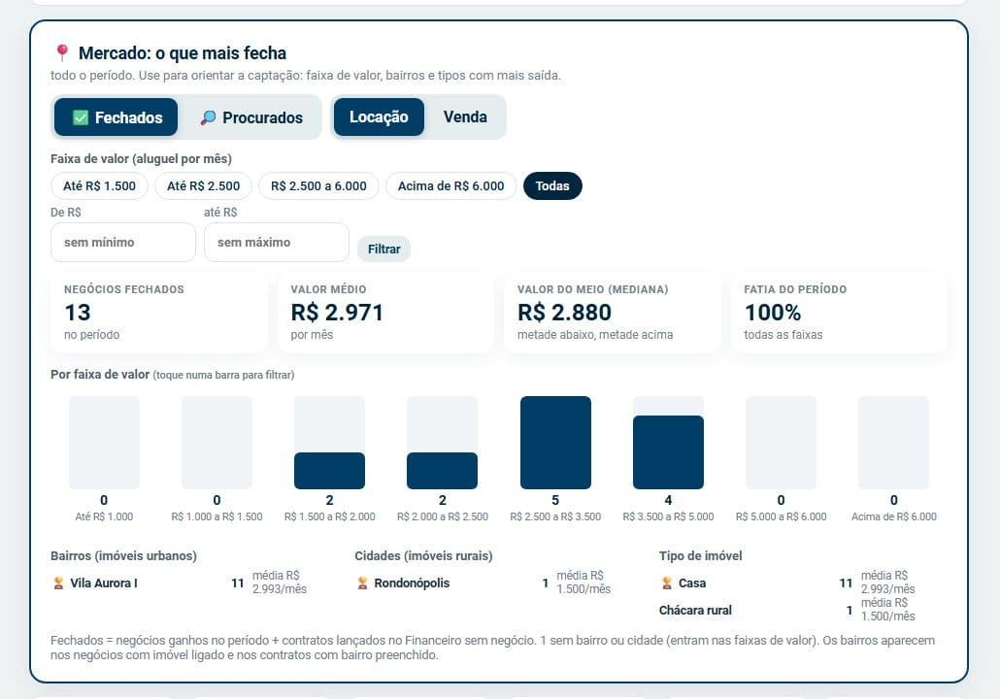
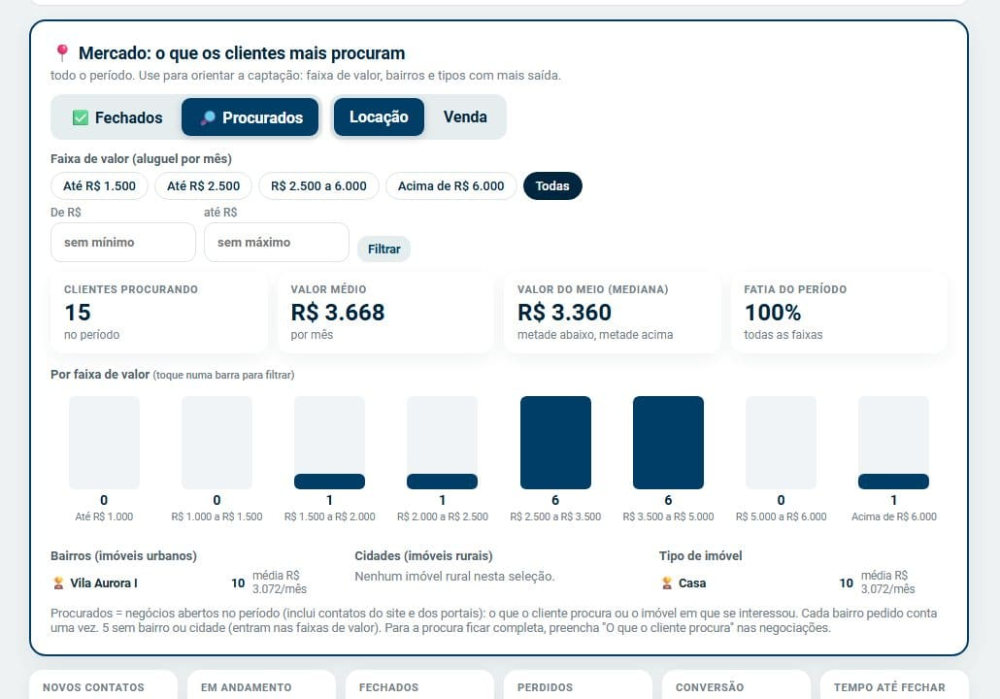
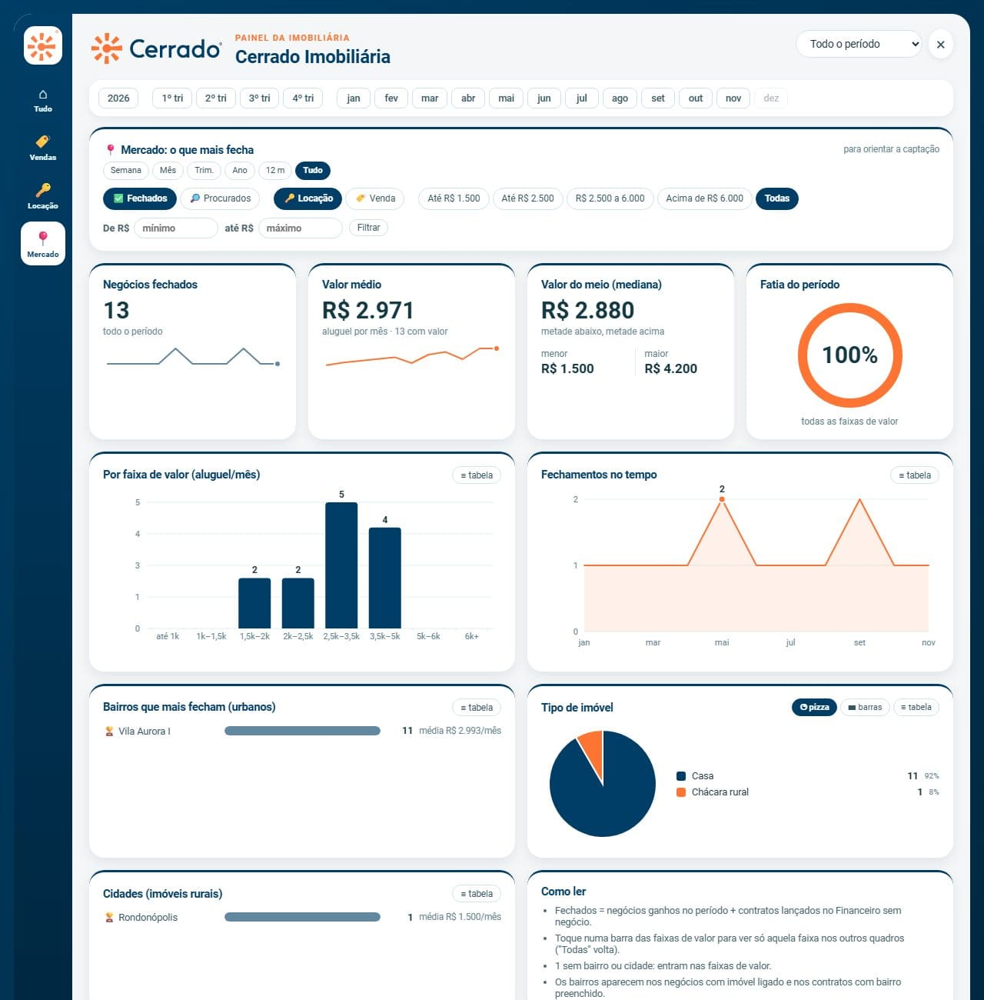
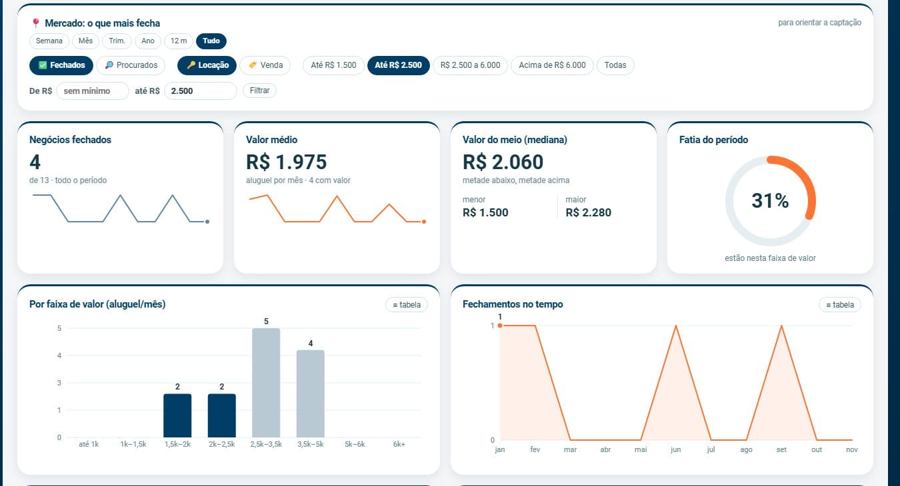
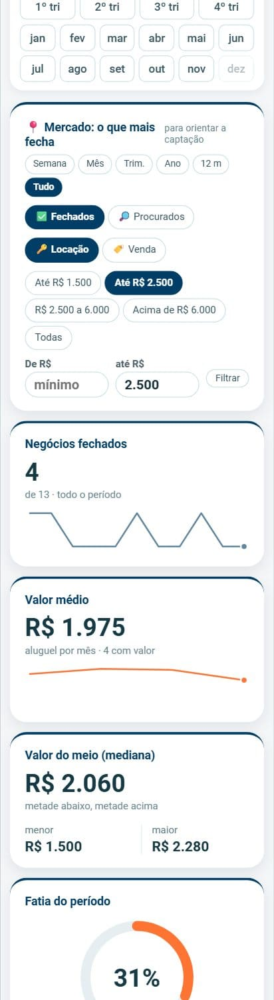

PROCEDIMENTO OPERACIONAL PADRÃO
Ver o mercado: faixas de valor, bairros e tipos
SKL Gestão Imobiliária · Indicadores e Painel
- Objetivo
- Saber em que faixa de valor, bairro, cidade e tipo de imóvel a imobiliária mais fecha negócio e o que os clientes mais procuram, para direcionar a captação.
- Aplicação
- Reuniões de equipe, planejamento de captação e acompanhamento do mercado.
- Responsáveis
- Administrador, Central e gestor.
- Pré-requisitos
- Acesso aos Indicadores ou ao Painel. Para os bairros, negócios com imóvel ligado, contratos com bairro ou “O que o cliente procura” preenchido.
- Resultado esperado
- Números e gráficos por faixa de valor, bairro, cidade rural e tipo, com quantidade e valor médio.
1. Procedimento
Pelos Indicadores
- Abra Indicadores, escolha o período (e, se quiser, um corretor) e toque em 📍 Mercado.
- Escolha ✅ Fechados (o que fechou) ou 🔎 Procurados (o que os clientes pediram) e Locação ou Venda.
- Para ver uma faixa, toque num atalho (ex.: “Até R$ 2.500”), digite De R$ … até R$ … e toque em Filtrar, ou toque numa barra do gráfico.
- Leia os quadros de bairros, cidades rurais e tipos, com a quantidade e o valor médio.

Indicadores → Mercado: o que mais fecha na locação.

O que os clientes mais procuram.
Pelo Painel
- Toque em 📊 Painel e, no menu da esquerda, em 📍 Mercado (abaixo de Locação).
- Escolha o período no topo ou nos botões do primeiro quadro, depois Fechados/Procurados, Locação/Venda e a faixa de valor.
- Veja os quadros: quantidade, valor médio, valor do meio (com menor e maior), fatia do período, gráfico por faixa, evolução no tempo, bairros, tipo de imóvel e cidades rurais.
- Toque numa barra das faixas para ver só aquela faixa em todos os quadros. Todas volta.
- Use ≡ tabela para ver os números em lista e, no tipo de imóvel, escolha pizza, barras ou tabela.

Painel → Mercado.

Faixa “Até R$ 2.500” escolhida: as outras barras ficam claras e os quadros mostram só essa faixa.

No celular, as faixas viram barras deitadas.
2. Pontos de atenção
Fechados = negócios ganhos no período + contratos lançados no Financeiro sem negócio. Procurados = negócios abertos no período, inclusive os contatos do site e dos portais.
O histórico importado do Power BI tem valor mas não tem imóvel: entra nas faixas de valor, não nos bairros.
Para os bairros ficarem completos: ligue o imóvel no negócio, preencha Bairro no imóvel não cadastrado do contrato e O que o cliente procura nas negociações.
3. Controle do documento
| Elaborado por | Versão | Data | Alteração |
|---|---|---|---|
| SKL Geo Soluções | 1.0 | 08/11/2026 | Emissão inicial. |